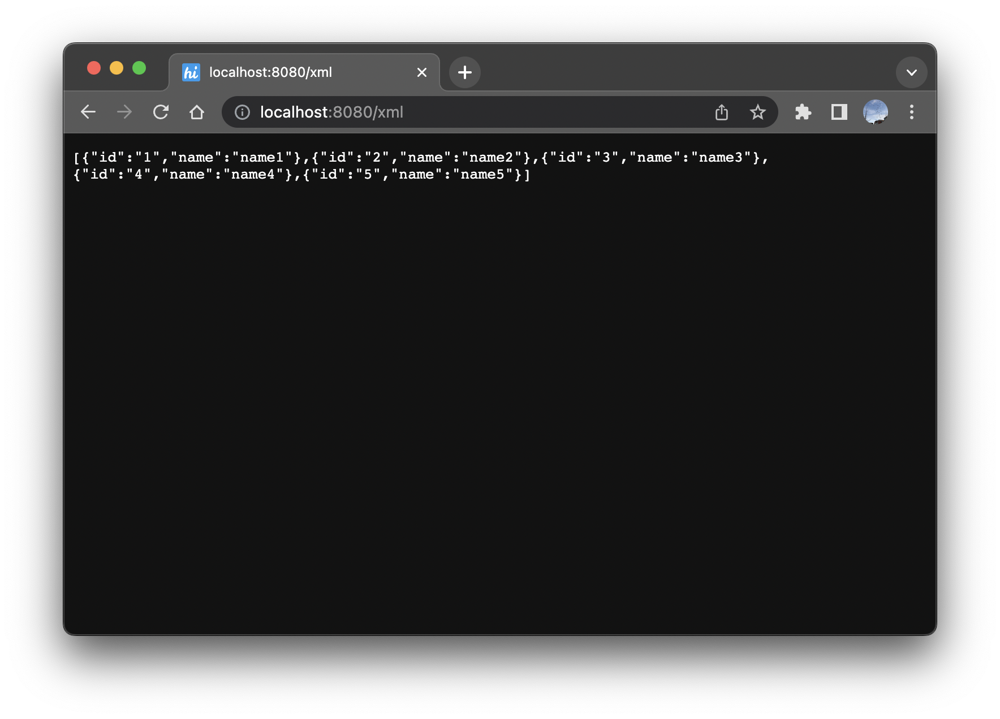
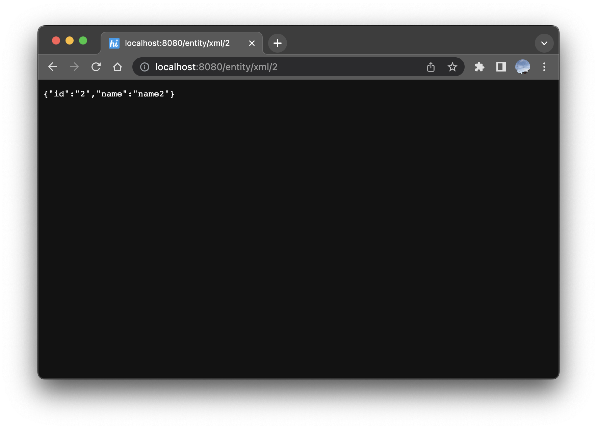

Springboot Mybatis 로 DB 연결하기 - 2 XML파일로 SQL 분리
1편에서는 Springboot 프로젝트를 만들고 @Mapper Annotation을 이용해서 SQL을 실행했다.
하지만 이 방법은 쿼리가 길어지거나 복잡해지면 상당히 불편해진다.
따라서 프로젝트에서 Mybatis를 사용한다면 주로 xml 파일을 따로 분리해서 쿼리를 호출 한다.
1. application.properties 에 설정 추가
mybatis.mapper-locations=classpath:/sql/xml/sql-*.xml
XML파일로 만들어 둘 Mybatis mapper의 위치를 지정해주는 설정이다.
2. Mapper xml 작성
<?xml version="1.0" encoding="UTF-8"?>
<!DOCTYPE mapper PUBLIC "-//mybatis.org//DTD Mapper 3.0//EN" "http://mybatis.org/dtd/mybatis-3-mapper.dtd">
<mapper namespace="manson112.github.springmybatis.app.mapper.TestMybatisMapper">
<select id="findAllXml" resultType="manson112.github.springmybatis.app.domain.MybatisTestEntity">
select *
from tb_mybatis_test
</select>
<select id="findByIdXml" parameterType="String" resultType="manson112.github.springmybatis.app.domain.MybatisTestEntity">
select *
from tb_mybatis_test
where id = #{id}
</select>
</mapper>
mapper 태그의 namespace를 @Mapper Annotation이 선언되어있는 Interface로 입력한다.
parameterType과 resultType을 작성해서 쿼리에 사용될 파라미터, 리턴될 객체의 타입을 지정해준다.
타입은 기본적으로 전체 패키지로 작성해야하지만, mybatis configuration 파일을 사용해서 alias를 줄 수있다.
3. Interface에 메서드 추가
@Mapper
public interface TestMybatisMapper {
@Select("select * from tb_mybatis_test")
public List<MybatisTestEntity> findAll();
@Select("select * from tb_mybatis_test where id=#{id}")
public MybatisTestEntity findById(@Param("id") String id);
// 추가된 메서드
public List<MybatisTestEntity> findAllXml();
public MybatisTestEntity findByIdXml(@Param("id") String id);
}
이 때, xml 파일의 select문 id와 메서드명을 일치시켜준다.
4. Controller 메서드 추가
@RestController
@RequiredArgsConstructor
public class IndexController {
private final TestMybatisMapper testMybatisMapper;
@GetMapping("/")
public List<MybatisTestEntity> findAll() {
return testMybatisMapper.findAll();
}
@GetMapping("/entity/{id}")
public MybatisTestEntity findById(@PathVariable String id) {
return testMybatisMapper.findById(id);
}
@GetMapping("/xml")
public List<MybatisTestEntity> findAllXml() {
return testMybatisMapper.findAllXml();
}
@GetMapping("/entity/xml/{id}")
public MybatisTestEntity findByIdXml(@PathVariable String id) {
return testMybatisMapper.findByIdXml(id);
}
}
추가된 각각의 메서드를 호출하는 get api를 추가작성한다.
5. 확인
서버를 실행시켜 결과를 확인한다.


3편에서는 이 게시글을 작성하면서 진짜 하고싶었던 부분에 대해 작성해보려한다.